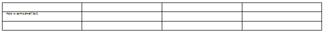
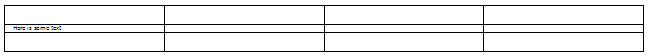

[Table of Contents] [docx version]
WordprocessingML Reference Material - Table of Contents
hideMark (Ignore End Of Cell Marker In Row Height Calculation)
This element specifies whether the end of cell glyph shall influence the height of the given table row in the table. If it is specified, then only printing characters in this cell shall be used to determine the row height.
[Rationale: Typically, the height of a table row is determined by the height of all glyphs in all cells in that row, including the non-printing end of cell glyph characters. However, if these characters are not formatted, they are always created with the document default style properties. This means that the height of a table row cannot ever be reduced below the size of the end of cell marker glyph without manually formatting each paragraph in that run.
In a typical document, this behavior is desirable as it prevents table rows from 'disappearing' if they have no content. However, if a table row is being used as a border (for example, by shading its cells or putting an image in them), then this behavior makes it impossible to have a virtual border that is reasonably small without formatting each cell's content directly. This setting specifies that the end of cell glyph shall be ignored for this cell, allowing it to collapse to the height of its contents without formatting each cell's end of cell marker, which would have the side effect of formatting any text ever entered into that cell. end rationale]
If this element is omitted, then the end of cell marker shall be included in the determination of the height of this row.
[Example: Consider the following WordprocessingML table:

Notice that the only printing content in this table row is displayed using 5 point font, yet the row height is influenced by the end of cell markers in the empty cells.
If each cell in the second row in this table was set to exclude the table cell from this calculation, using the following WordprocessingML:
<w:tcPr>
<w:hideMark/>
</w:tcPr>
The resulting table shall exclude the cell markers from the row height calculation:

The hideMark element specified that each cell marker was excluded, resulting in the row height being defined by the actual run contents. end example]
|
Parent Elements |
|
tcPr (§2.7.5.8); tcPr (§2.4.66); tcPr (§2.7.5.9); tcPr (§2.4.67) |
|
Attributes |
Description |
|
val (On/Off Value) |
Specifies a binary value for the property defined by the parent XML element.
A value of on, 1, or true specifies that the property shall be explicitly applied. This is the default value for this attribute, and is implied when the parent element is present, but this attribute is omitted.
A value of off, 0, or false specifies that the property shall be explicitly turned off.
[Example: For example, consider the following on/off property:
<w:… w:val="off"/>
The val attribute explicitly declares that the property is turned off. end example]
The possible values for this attribute are defined by the ST_OnOff simple type (§2.18.67). |
The following XML Schema fragment defines the contents of this element:
<complexType name="CT_OnOff">
<attribute name="val" type="ST_OnOff"/>
</complexType>